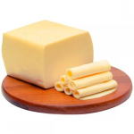

Pão Integral
O pão integral oferece diversos benefícios para a saúde, como a presença de fibras, vitaminas e minerais que ajudam a regular...Ver mais.

Queijo Mussarela
O queijo mussarela é uma fonte rica de proteínas e cálcio, contribuindo para a saúde óssea e muscular. Além de ser...Ver mais.

Paçoca
A paçoca é um doce tradicional feito à base de amendoim, açúcar e sal, com algumas variações que podem incluir ingredientes como...Ver mais.

Ovo Cozido
O ovo é considerado um dos alimentos mais completos, sendo uma excelente fonte de proteínas, vitaminas e minerais, como as vitaminas...Ver mais.